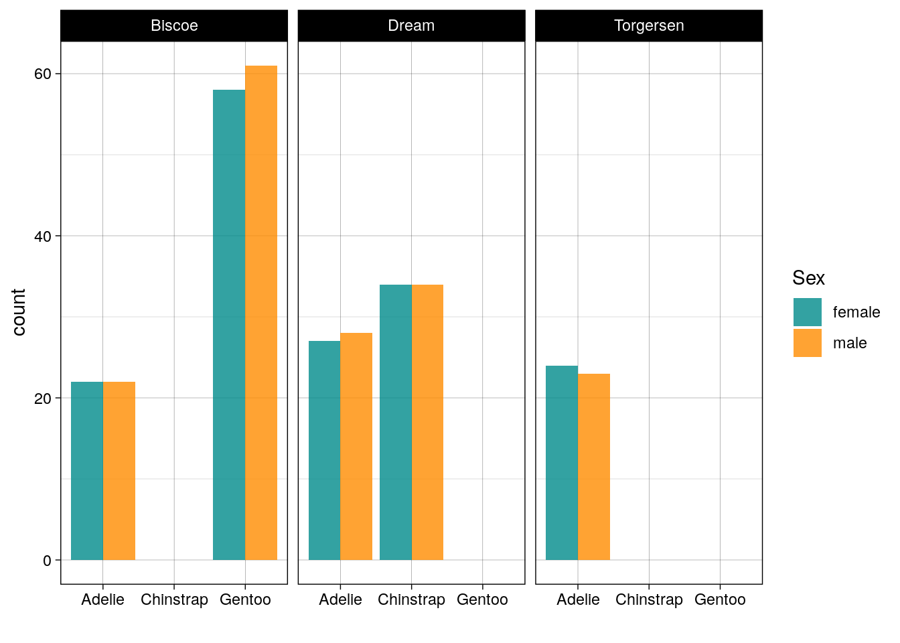
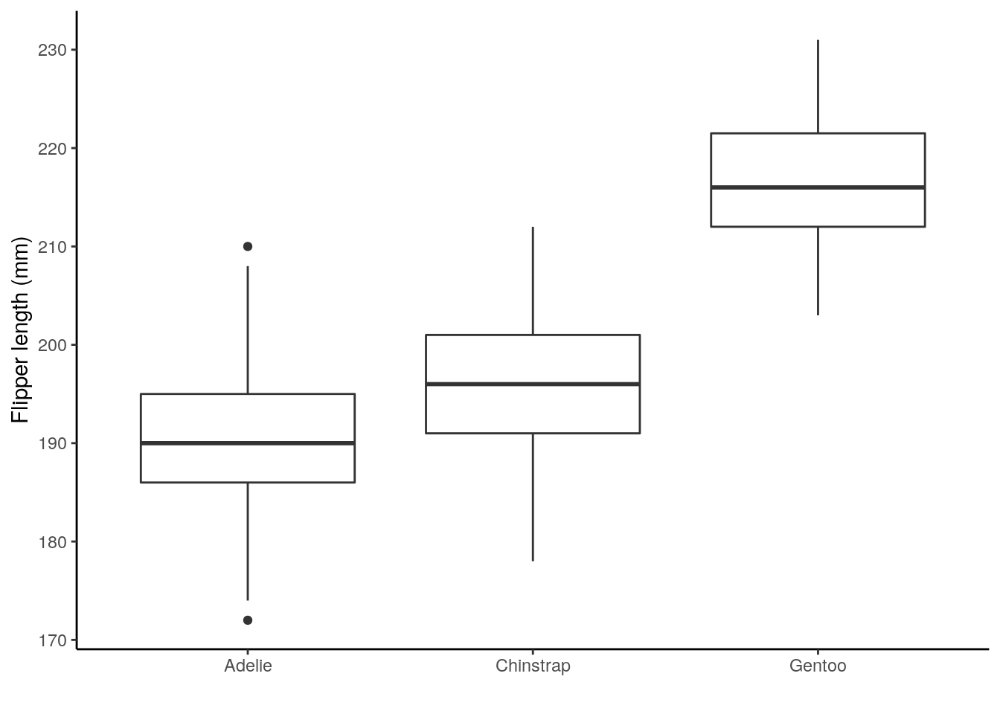

2 Data exploration and visualization
So now you've been introduced to R and RStudio let's get going with some data manipulation and visualization. Exploring and visualising your data is one of the most important steps. It's also one of the simplest!
You'll not find anyone who's not made the mistake of taking their data for granted. Just because someone says it's so NEVER trust that that's the case. From typos, to NAs, through -999 and let's not even talk dates, your data will always have a surprise in store for you.
2.1 Learning objectives
- Carry out and interpret the outputs of basic exploratory data analysis using in-built R functions
- Define data sovereignty and explain this in relation to a researcher's obligation when collecting, displaying, and analysing data
- Create and communicate informative data visualisations using
R - Discuss and critique data visualisations
2.2 Data wrangling and manipulation
tidy data

Illustration from the Openscapes blog Tidy Data for reproducibility, efficiency, and collaboration by Julia Lowndes and Allison Horst
2.2.1 Introuducing the Palmer penguins
library(palmerpenguins) ## contains some nice penguin data
penguins## # A tibble: 344 x 8
## species island bill_length_mm bill_depth_mm flipper_length_… body_mass_g
## <fct> <fct> <dbl> <dbl> <int> <int>
## 1 Adelie Torge… 39.1 18.7 181 3750
## 2 Adelie Torge… 39.5 17.4 186 3800
## 3 Adelie Torge… 40.3 18 195 3250
## 4 Adelie Torge… NA NA NA NA
## 5 Adelie Torge… 36.7 19.3 193 3450
## 6 Adelie Torge… 39.3 20.6 190 3650
## 7 Adelie Torge… 38.9 17.8 181 3625
## 8 Adelie Torge… 39.2 19.6 195 4675
## 9 Adelie Torge… 34.1 18.1 193 3475
## 10 Adelie Torge… 42 20.2 190 4250
## # … with 334 more rows, and 2 more variables: sex <fct>, year <int>So, what does this show us?
A tibble: 344 x 8: Atibbleis a specific kind of data frame inR. Thepenguindataset has344rows (i.e., 344 different observations). Here, each observation corresponds to a penguin.8columns corresponding to 3 variables describing each observation.species,island,bill_length_mm,bill_depth_mm,flipper_length_mm,body_mass_g,sex, andyearare the different variables of this dataset.- We then have a preview of the first 10 rows of observations corresponding to the first 10 penguins. ``
... with 334 more rowsindicates there are 334 more rows to see, but these have not been printed (likely as it would clog our screen)
To learn more about the penguins read the paper that talks all about the data collection.
2.2.2 Common dataframe manipulations in the tidyverse, using dplyr and tidyr
Even from these first few rows of data we can see that there are some NA values. Let's count the number of NAs. Remember the %>% operator? Here we're going to be introduced to a few new things
- the
apply()function, - the
is.na()function, and - how
Rdeals withlogicalvalues!
library(tidyverse)
penguins %>%
apply(.,2,is.na) %>%
apply(.,2,sum)## species island bill_length_mm bill_depth_mm
## 0 0 2 2
## flipper_length_mm body_mass_g sex year
## 2 2 11 0There's lot going on in that code! Let's break it down
- Take
penguinsthen - Use
penguinsas an input to theapply()function (this is specified as the first argument using the.) - Now the
apply()function takes 3 arguments:- the data object you want it to apply something to (in our case
penguins) - the margin you want to apply that something to; 1 stands for rows and 2 stands for columns, and
- the function you want it to apply (in our case
is.na()).
- the data object you want it to apply something to (in our case
- So the second line of code is asking
Rto apply theis.na()function over the columns ofpenguinsis.na()asks for each value it's fed is it anNAvalue; it returens aTRUEif so and aFALSEotherwise
- The output from the first
apply()is then fed to the secondapply()(using the.). Thesum()function then add them up!Rtreats aTRUEas a 1 and aFALSEas a 0.
So how many NAs do you think there are!
Doesn't help much. To
Now we know there are NA values throughout the data let's remove then and create a new NA free version called penguins_nafree. There is a really handy tidyverse (dplyr) function for this!
penguins_nafree <- penguins %>% drop_na()
penguins_nafree## # A tibble: 333 x 8
## species island bill_length_mm bill_depth_mm flipper_length_… body_mass_g
## <fct> <fct> <dbl> <dbl> <int> <int>
## 1 Adelie Torge… 39.1 18.7 181 3750
## 2 Adelie Torge… 39.5 17.4 186 3800
## 3 Adelie Torge… 40.3 18 195 3250
## 4 Adelie Torge… 36.7 19.3 193 3450
## 5 Adelie Torge… 39.3 20.6 190 3650
## 6 Adelie Torge… 38.9 17.8 181 3625
## 7 Adelie Torge… 39.2 19.6 195 4675
## 8 Adelie Torge… 41.1 17.6 182 3200
## 9 Adelie Torge… 38.6 21.2 191 3800
## 10 Adelie Torge… 34.6 21.1 198 4400
## # … with 323 more rows, and 2 more variables: sex <fct>, year <int>Below are some other useful manipulation functions; have a look at the out puts and run them yourselves and see if you can work out what they're doing.
filter(penguins_nafree, island == "Torgersen" )## # A tibble: 47 x 8
## species island bill_length_mm bill_depth_mm flipper_length_… body_mass_g
## <fct> <fct> <dbl> <dbl> <int> <int>
## 1 Adelie Torge… 39.1 18.7 181 3750
## 2 Adelie Torge… 39.5 17.4 186 3800
## 3 Adelie Torge… 40.3 18 195 3250
## 4 Adelie Torge… 36.7 19.3 193 3450
## 5 Adelie Torge… 39.3 20.6 190 3650
## 6 Adelie Torge… 38.9 17.8 181 3625
## 7 Adelie Torge… 39.2 19.6 195 4675
## 8 Adelie Torge… 41.1 17.6 182 3200
## 9 Adelie Torge… 38.6 21.2 191 3800
## 10 Adelie Torge… 34.6 21.1 198 4400
## # … with 37 more rows, and 2 more variables: sex <fct>, year <int>summarise(penguins_nafree, avgerage_bill_length = mean(bill_length_mm))## # A tibble: 1 x 1
## avgerage_bill_length
## <dbl>
## 1 44.0group_by(penguins_nafree, species)## # A tibble: 333 x 8
## # Groups: species [3]
## species island bill_length_mm bill_depth_mm flipper_length_… body_mass_g
## <fct> <fct> <dbl> <dbl> <int> <int>
## 1 Adelie Torge… 39.1 18.7 181 3750
## 2 Adelie Torge… 39.5 17.4 186 3800
## 3 Adelie Torge… 40.3 18 195 3250
## 4 Adelie Torge… 36.7 19.3 193 3450
## 5 Adelie Torge… 39.3 20.6 190 3650
## 6 Adelie Torge… 38.9 17.8 181 3625
## 7 Adelie Torge… 39.2 19.6 195 4675
## 8 Adelie Torge… 41.1 17.6 182 3200
## 9 Adelie Torge… 38.6 21.2 191 3800
## 10 Adelie Torge… 34.6 21.1 198 4400
## # … with 323 more rows, and 2 more variables: sex <fct>, year <int>Often we want to summarise variables by different groups (factors). Below we
- Take the
penguins_nafreedata then - Use this and apply the
group_by()function to group byspecies - Use this output and apply the
summarize()function to calculate the mean (using (mean()) bill length (bill_length_mm) of each group (species), calling the resulting numberavgerage_bill_length
penguins_nafree %>%
group_by(species) %>%
summarise(avgerage_bill_length = mean(bill_length_mm))## # A tibble: 3 x 2
## species avgerage_bill_length
## * <fct> <dbl>
## 1 Adelie 38.8
## 2 Chinstrap 48.8
## 3 Gentoo 47.6We can also group by multiple factors, for example,
penguins_nafree %>%
group_by(island,species) %>%
summarise(avgerage_bill_length = mean(bill_length_mm))## `summarise()` has grouped output by 'island'. You can override using the `.groups` argument.## # A tibble: 5 x 3
## # Groups: island [3]
## island species avgerage_bill_length
## <fct> <fct> <dbl>
## 1 Biscoe Adelie 39.0
## 2 Biscoe Gentoo 47.6
## 3 Dream Adelie 38.5
## 4 Dream Chinstrap 48.8
## 5 Torgersen Adelie 39.02.3 Data sovereignty
2.4 Data Viz
"...have obligations in that we have a great deal of power over how people ultimately make use of data, both in the patterns they see and the conclusions they draw."
"Clutter and confusion are not attributes of data - they are shortcomings of design."
2.4.1 Two types of plots
- For you
- data exploration
- doesn't have to look pretty
- just needs to get to the point


- For others
- clear purpose
- designed for the audience
- make it easy to read (this covers a lot of things)
- do not distort

Plots by Cedric Scherer and mentioned on this blog
So we've seen some pretty plots, let's get around to making some!
2.4.2 Introducing ggplot2
ggplot2 is an R package for producing statistical, or data, graphics; it has an underlying grammar based on the Grammar of Graphics
Every ggplot2 plot has three key components:
data,A set of
aesthetic mappings between variables in the data and visual properties, andAt least one layer which describes how to render each observation. Layers are usually created with a
geomfunction.
2.4.2.1 Plotting palmerpenguins
You might find this application useful, now and later...
We've seen that there are three factor variables in the dataset: species, island, and sex. To count the number of penguins of each species and sex on each island we could use
penguins_nafree %>%
count(species, sex, island)## # A tibble: 10 x 4
## species sex island n
## <fct> <fct> <fct> <int>
## 1 Adelie female Biscoe 22
## 2 Adelie female Dream 27
## 3 Adelie female Torgersen 24
## 4 Adelie male Biscoe 22
## 5 Adelie male Dream 28
## 6 Adelie male Torgersen 23
## 7 Chinstrap female Dream 34
## 8 Chinstrap male Dream 34
## 9 Gentoo female Biscoe 58
## 10 Gentoo male Biscoe 61Not too easy to compare the numbers here; what about a bar graph (geom_bar())? Based on what we went throuh in the lecture see if you can figure out what each line is adding to the plot. What do you think facet_wrap() is doing? To figure it out run the code yourself and try changing some of the lines of code.
ggplot(penguins_nafree, aes(x = species, fill = sex)) +
geom_bar(alpha = 0.8, position = "dodge") +
facet_wrap(~island) +
xlab("") +
theme_linedraw() + ## remember themes...
scale_fill_manual(values = c("cyan4","darkorange"), name = "Sex") 
We aslo saw there were a few continuous variables, so let's look at scatter plots (geom_point()).
ggplot(data = penguins_nafree, aes(x = bill_length_mm, y = bill_depth_mm)) +
geom_point(aes(color = species),size = 2) +
scale_color_manual(values = c("darkorange","darkorchid","cyan4"), name = "") +
theme_bw() + ## Oo a new theme
xlab("Bill length (mm)") +
ylab("Bill length (mm)")What about the spread/distribution of our continuous vaiables by the factor variables (e.g., species):
- Boxplots (
geom_boxplot())? - Violin plots (
geom_violin())? - Histograms (
geom_histogram())?
In addition,we should always avoid using similarily bight red and green colours: they may not be distinguishable for red-green colorblind readers. Using ggplot2 we can access a whole range of colourblind friendly palettes: one package that has a whole range is RColorBrewer install it then try running RColorBrewer::display.brewer.all(colorblindFriendly = TRUE) what do you think you've asked your compueter to show you?
## boxplot
ggplot(penguins_nafree,aes(x = species, y = flipper_length_mm)) +
geom_boxplot() +
ylab("Flipper length (mm)") + xlab("") +
theme_classic() ## yet another theme
## violin plot
ggplot(penguins_nafree,aes(x = species, y = flipper_length_mm)) +
geom_violin() +
ylab("Flipper length (mm)") + xlab("") +
theme_minimal() ## soon you could be making your own## histogram, with a colorblind friendly palette
## try running display.brewer.all(colorblindFriendly = TRUE)
## what do you think it's doing
ggplot(penguins_nafree,aes(x = flipper_length_mm)) +
geom_histogram(aes(fill = species), alpha = 0.5, position = "identity") +
xlab("Flipper length (mm)") +
scale_fill_brewer(palette = "Dark2", name = "Species") +
theme_light()2.4.2.2 What do we think about when we look at plots
Between group variation
 Within group variation
Within group variation